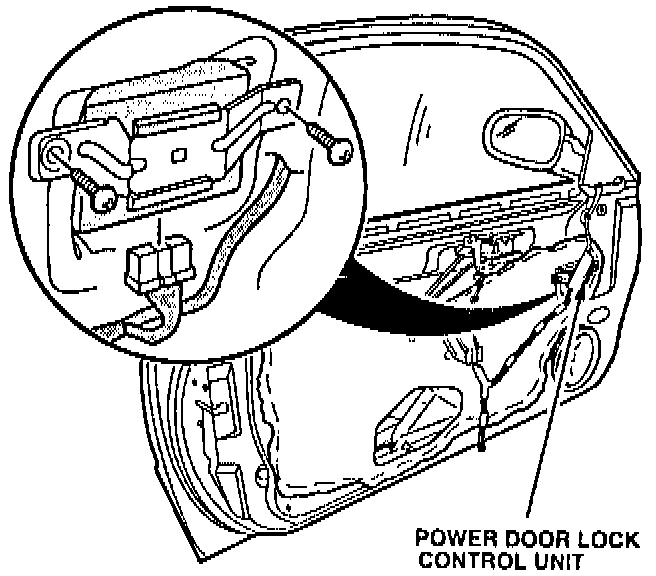

Power Door Locks - Cycle From Locked to Unlocked
YEAR1994
MODEL
INTEGRA
VIN APPLICATION
See VEHICLES AFFECTED
BULLETIN NO.
94-005
June 14, 1994
Power Door Locks Cycle From Locked to Unlocked
SYMPTOM
In a small number of cars, after locking the doors with the power door locks, the locks immediately unlock by themselves.
PROBABLE CAUSE
Power door lock control unit is faulty.
VEHICLES AFFECTED
1994 INTEGRA 3-door:
GS-R - thru VIN JH4DC2...RS006584
LS - thru VIN JH4DC4...RS041974
CORRECTIVE ACTION
Replace the power door lock control unit with the part listed under PARTS INFORMATION.
1. Remove the driver's side door panel as described on page 20-4 of the Service Manual.

2. Remove and replace the power door lock control unit with the part listed under PARTS INFORMATION.
3. Reinstall the door panel.
4. Check the power door locks for proper operation.
PARTS INFORMATION
Power Door Lock Control Unit: P/N 38380-ST7-A01
WARRANTY CLAIM INFORMATION
In warranty:
The normal warranty applies.
Out of warranty:
Any repair performed after warranty expiration may be eligible for goodwill consideration by the District Service Manager or your Zone Office. You must request consideration, and get a decision, before starting work.
Operation number: 748100
Flat rate time: 0.6 hour
Failed P/N: 38380-ST7-A01
Defect code: 032
Contention code: B01